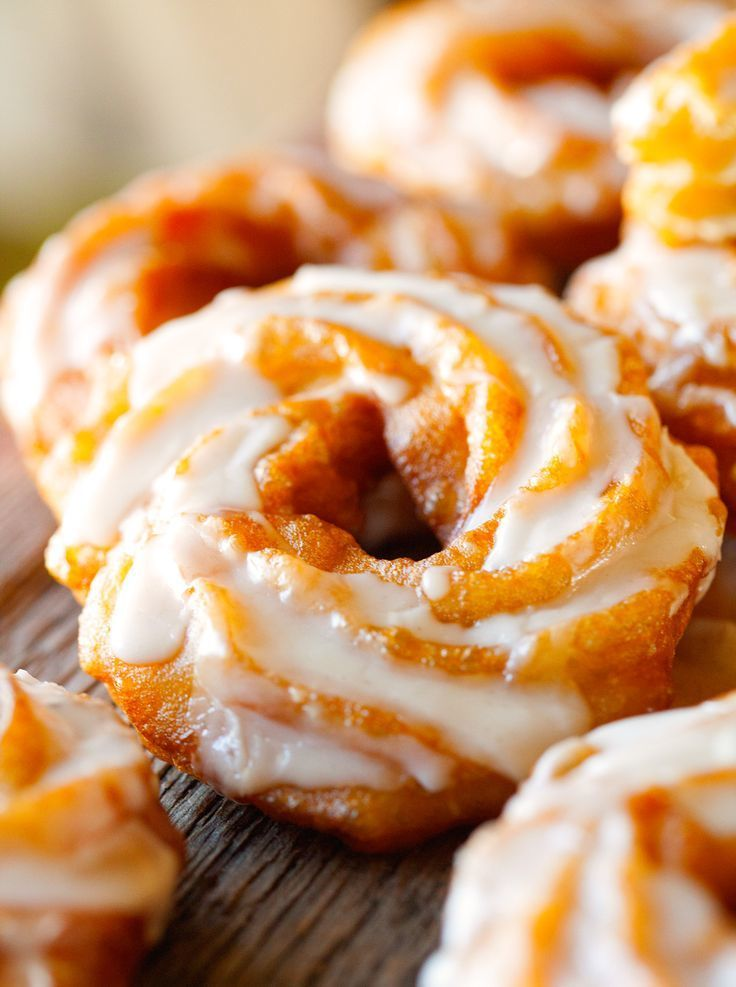

Пирожки от Дяди Бори
+7 (383) 227-87-00
О нас
Мы — семейная пекарня «Пирожки от Дяди Бори» с более чем 15-летним опытом. Начав с маленькой домашней кухни, мы выросли в любимое место горожан, где каждый пирожок готовится с душой и по старинным семейным рецептам, передающимся из поколения в поколение.


История
Секрет нашего успеха — в бережном отношении к традициям и использовании только натуральных продуктов. Мука от проверенных поставщиков, свежее фермерское мясо, овощи с местных рынков — мы тщательно отбираем каждый ингредиент, чтобы вы почувствовали настоящий домашний вкус, как в детстве у бабушки.